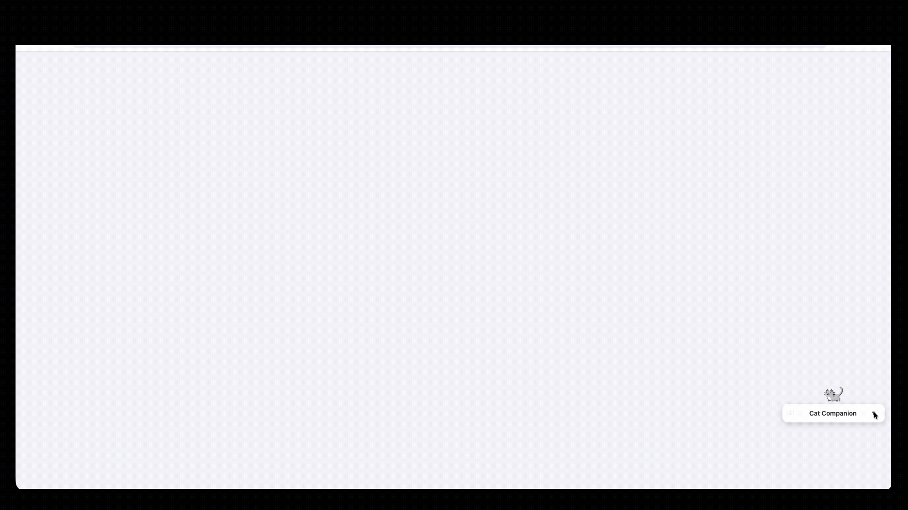

Downloadable & Browser Extension — Reminder App

Description
- A downloadable app and/or browser extension that lets users add reminders while featuring an adorable cat to make it cuter. Users can choose whether the cat moves across the screen or stays still in whichever position they leave the widget.
Why I created this
- I was inspired by a post I saw of a cat moving across someone’s monitor. I wanted to see how long it would take for Gemini to replicate it.
- After creating this widget, I noticed it was more distracting than helpful, so I added the functionality to include multiple reminders. When it was still too distracting, I asked Gemini to create a static version to make it more subtle.
Issues I encountered
- Most of the debugging involved adjusting the animation for each side of the screen and positioning the reminder text so none of the words were cut off.
- As a browser extension, the widget only showed up on a specific page, so if users switched tabs they wouldn’t see it. I created a desktop app to get around this.
What I learned
- Packaging a downloadable app is easier than I thought, especially with an AI assistant — it’s mainly building the app itself that’s hard.